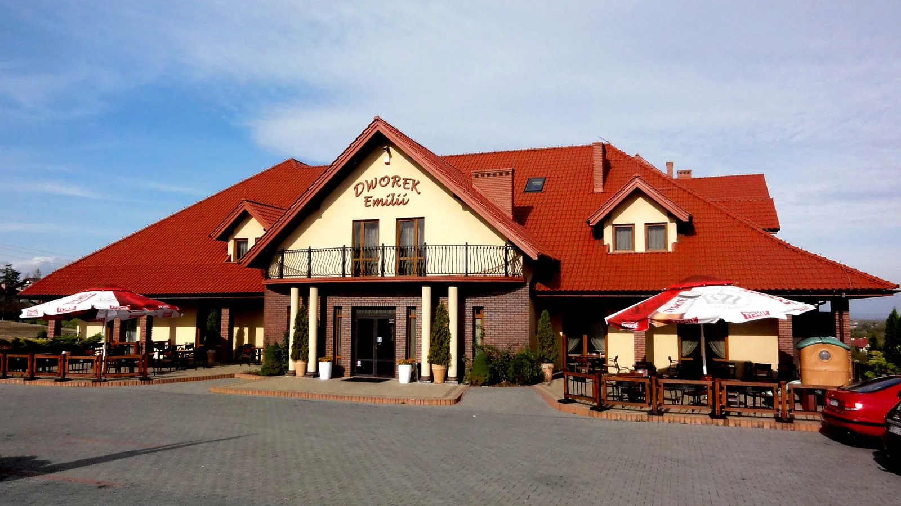

Poznaj Dworek Emilii
Pokoje, wnętrza, sale i dania. Wybierz zdjęcie, aby zobaczyć je w powiększeniu.

Galeria
Wnętrza, stoły i smaki
Kliknij zdjęcie, aby je powiększyć.
Pokoje, wnętrza, sale i dania. Wybierz zdjęcie, aby zobaczyć je w powiększeniu.

Galeria
Kliknij zdjęcie, aby je powiększyć.